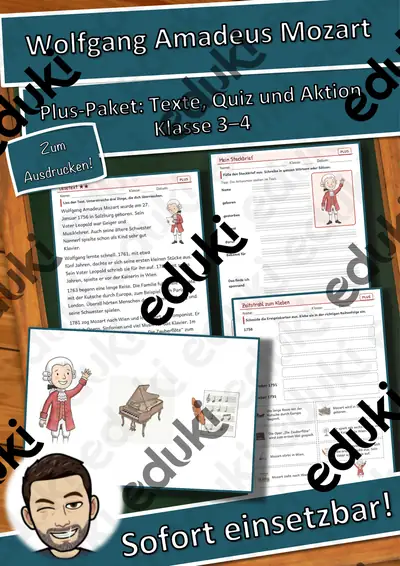
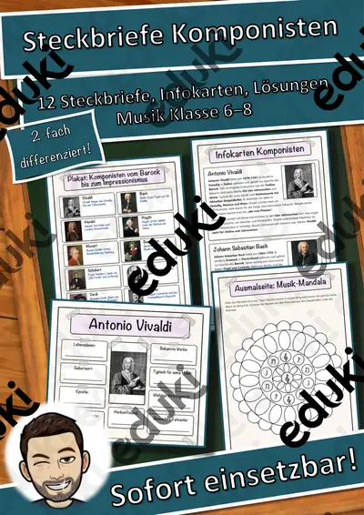
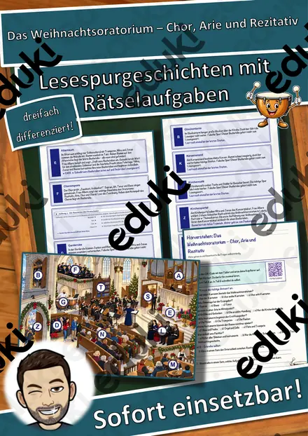
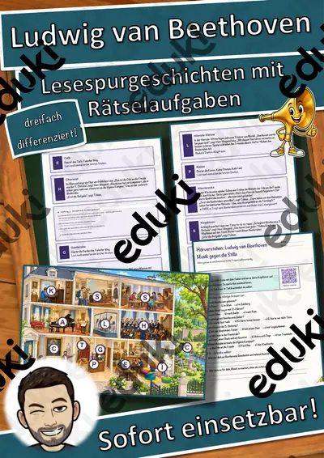
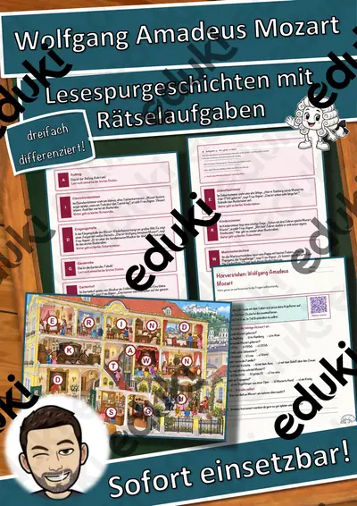
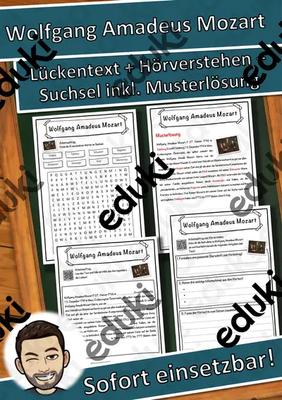
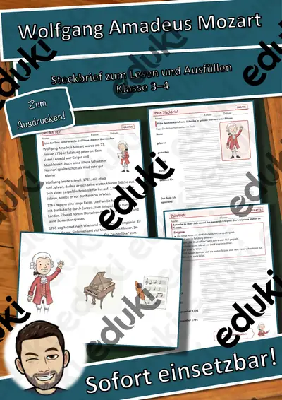

Komponisten und Musikgeschichte: Arbeitsblätter für Klasse 3–10 (Musik)
Musikgeschichte lernt man über Persönlichkeiten. Mozart, Beethoven, Bach und andere stehen für Epochen, Gattungen und Biografien.
Die Begriffsliste dieser Einheit: Barock, Klassik, Romantik, Mozart, Beethoven und Oper.
In den Lehrplänen der Länder ist das Thema im Fach Musik verankert, meist in den Klassen 3 bis 10. Die Schülerinnen und Schüler ordnen Komponisten Epochen zu und hören Beispiele.
Im Alltag einer Lehrkraft zählt, dass Material sofort einsatzbereit ist: Die Blätter zu Komponisten und Musikgeschichte greifen Klassik, Romantik und Mozart auf, lassen sich ausdrucken und kommen mit Lösungen, damit die Vorbereitung kurz bleibt. Zur Differenzierung eignen sich die Lesespurgeschichten mit ihren drei Niveaustufen.
Aus unserem Katalog gehören 18 Materialien zu diesem Thema, darunter Persönlichkeiten-Werkstatt: Mozart, Steckbriefe Komponisten und Das Weihnachtsoratorium. Der Bestand umfasst 4 Lesespurgeschichten und 11 Lückentexte mit Hörverstehen und reicht über Klasse 3–7. Fünf Minuten Hörbeispiel zum Einstieg wirken stärker als jede Biografie.
Das gehört zum Thema
Passende Arbeitsblätter und Materialpakete

Persönlichkeiten-Werkstatt: Mozart – Plus-Paket mit Texten in 3 Stufen, Quiz und Aktion, Klasse 3–4

Steckbriefe Komponisten – Materialpaket (12 Komponisten vom Barock bis zum Impressionismus, differenziert, mit Lösungen)

Das Weihnachtsoratorium – Chor, Arie und Rezitativ – Lesespurgeschichte mit Rätselaufgaben (Klasse 7)

Ludwig van Beethoven – Musik gegen die Stille – Lesespurgeschichte mit Rätselaufgaben (Klasse 6)

Die Oper – Musik, die Geschichten erzählt – Lesespurgeschichte mit Rätselaufgaben (Klasse 7)

Wolfgang Amadeus Mozart – Lesespurgeschichte mit Rätselaufgaben (Klasse 3)

Wolfgang Amadeus Mozart Lückentext mit Wortspeicher Hörverstehen und Suchsel

Richard Wagner Lückentext mit Wortspeicher Hörverstehen und Suchsel

Orchester Lückentext mit Wortspeicher Hörverstehen und Suchsel

Oper Lückentext mit Wortspeicher Hörverstehen und Suchsel

Frédéric Chopin Lückentext mit Wortspeicher Hörverstehen und Suchsel

Franz Schubert Lückentext mit Wortspeicher Hörverstehen und Suchsel

Joseph Haydn Lückentext mit Wortspeicher Hörverstehen und Suchsel

Georg Friedrich Händel Lückentext mit Wortspeicher Hörverstehen und Suchsel

Ludwig van Beethoven Lückentext mit Wortspeicher Hörverstehen und Suchsel

Komponist Lückentext mit Wortspeicher Hörverstehen und Suchsel

Antonio Vivaldi Lückentext mit Wortspeicher Hörverstehen und Suchsel

Persönlichkeiten-Werkstatt: Mozart – Steckbrief zum Lesen und Ausfüllen, Klasse 3–4 (kostenlos)
Häufige Fragen
Für welche Klassenstufe passen die Arbeitsblätter zu Komponisten und Musikgeschichte?
Passend sind Klasse 3–7. Von den 18 Titeln wenden sich die meisten an Klasse 6, einige lassen sich differenzierend auch in benachbarten Stufen nutzen.
Welche Inhalte decken die Materialien zu Komponisten und Musikgeschichte ab?
Inhaltlich reicht die Auswahl von Barock über Klassik und Romantik bis zu Beethoven; Details stehen bei den einzelnen Materialien.
Wie setze ich Komponisten und Musikgeschichte im Unterricht ein?
Fünf Minuten Hörbeispiel zum Einstieg wirken stärker als jede Biografie. Danach genügt meist ein Material als Einstieg und eines zum Üben.
Mehr Material nach Fach und Klasse
- Alle Materialien Deutsch
- Arbeitsblätter Deutsch Klasse 3
- Arbeitsblätter Deutsch Klasse 4
- Arbeitsblätter Deutsch Klasse 5
- Arbeitsblätter Deutsch Klasse 6
- Arbeitsblätter Deutsch Klasse 7
- Arbeitsblätter Deutsch Klasse 8
- Arbeitsblätter Deutsch Klasse 9
- Arbeitsblätter Deutsch Klasse 10
- Unterrichtsmaterial Klasse 3
- Unterrichtsmaterial Klasse 4
- Unterrichtsmaterial Klasse 5
- Unterrichtsmaterial Klasse 6
- Unterrichtsmaterial Klasse 7
- Unterrichtsmaterial Klasse 8
- Unterrichtsmaterial Klasse 9
- Unterrichtsmaterial Klasse 10
Verwandte Lehrplanthemen
- Instrumente, Rhythmus und Musik hören (Musik, Klasse 1–6)
- Addition und Subtraktion (Mathematik, Klasse 1–4)
- Das alte Ägypten (Geschichte, Klasse 4–7)
- Atmung, Verdauung und Organe (Biologie, Klasse 5–9)